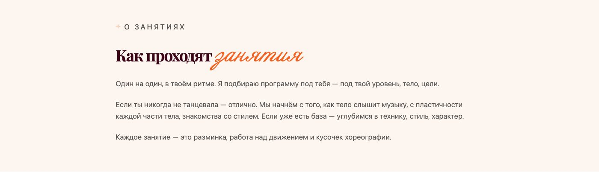
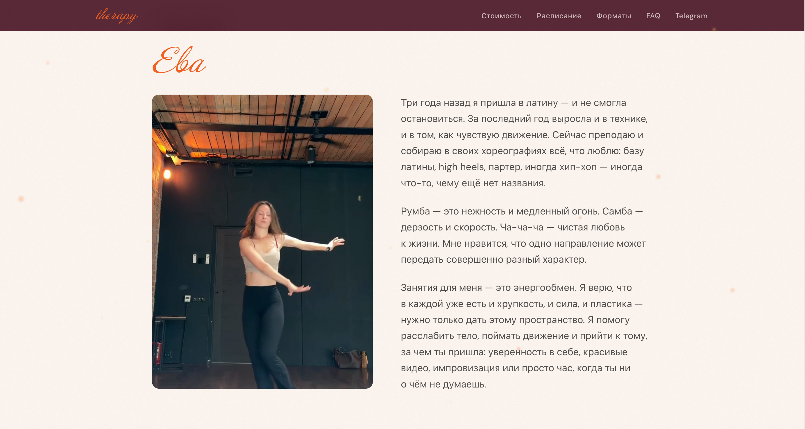
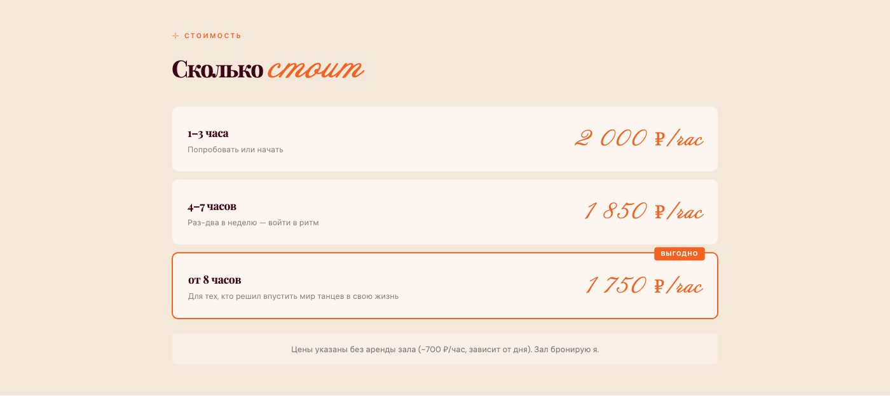
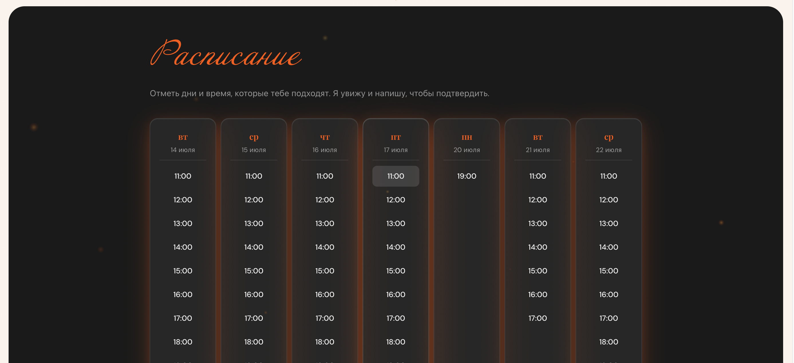
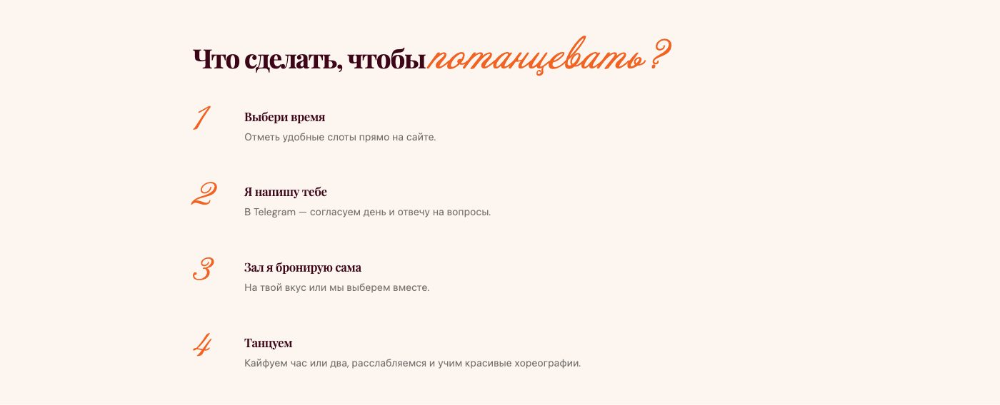
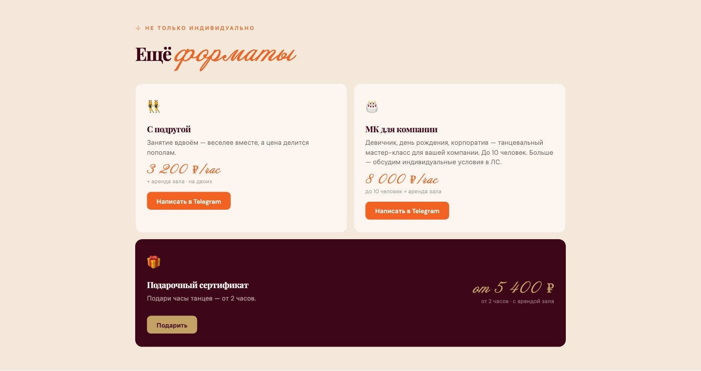
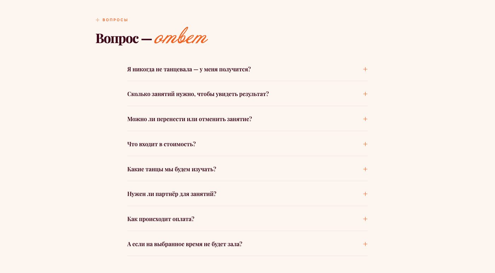

Разбор по экранам

Видео вместо фото
Танец — это движение, и фотография его не передаёт. Поэтому первый экран — это фоновое видео. Минимум текста: название, город, одна кнопка. Человек сразу понимает, куда попал и что здесь за энергия.

Как проходят занятия
Самый частый страх — «я никогда не танцевала, будет неловко». Этот блок его снимает: описание процесса (разминка → движение → хореография), спокойный тон, фраза «если ты никогда не танцевала — отлично». Человек читает и понимает, что ему тут рады.

Обо мне — от первого лица
Второй видео-блок. Здесь уже не атмосфера, а знакомство: мой путь в латину, подход к занятиям, что для меня важно. Человек выбирает преподавателя — и этот блок помогает решить, подходим ли мы друг другу.

Цены — открыто и без «напишите для цены»
Три пакета по количеству часов: чем больше берёшь, тем дешевле за час. Отдельно указана аренда зала — чтобы не было сюрпризов. Средний пакет выделен как оптимальный.

05 — Запись на слоты
Интерактивная сетка: свободные слоты — кликабельные, занятые — серые. Человек отмечает удобное время, я вижу выбор и подтверждаю. Никакого «напишите, когда удобно».

Четыре шага от сайта до зала
Выбери слоты → я напишу в Telegram → забронирую зал → танцуем. Простая схема, которая убирает вопрос «а что дальше?». Особенно помогает тем, кто записывается на танцы в первый раз.

Не только индивидуально
Три карточки — с подругой, МК для компании, подарочный сертификат. У каждой своя цена и кнопка. Сертификат — отдельная находка: люди покупают часы в подарок, и так приходят новые ученики, которых я не искала.

FAQ и практические мелочи
8 вопросов, которые мне задавали десятки раз — от «нужен ли партнёр?» до «можно ли перенести занятие?». Плюс блок «Что взять с собой» с адресом зала. Мелочи, но именно они снимают последние сомнения.